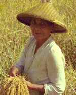

Mit drei Monaten Verspätung erreichte die Badische Zeitung, von der Oma in Breisach wochenweise gebündelt, per Seepost die Kleinstadt Kuningan in Westjava. Die Werbekunden mögen es nachträglich verzeihen, dass als Gewichtsersparnis die Anzeigen vor dem Versand
entfernt worden waren. Nach sorgfältigem Studium, bis hin zu den Vereinsmitteilungen aus Achkarren, wurde das Papier noch hinterlistigen Zwecken zugeführt, denn indonesisches Zeitungspapier wurde mit dem Niedergang der Wirtschaft in den frühen 60er Jahren immer brüchiger und richtiges Toilettenpapier war Mangelware. Hier der dritte Brief aus Indonesien an die "Bunte Kiste".
Am Fuße eines ehemaligen Vulkans
Lieber Muck! Seit sieben Monaten bin ich wieder in Indonesien, wo mein Vater als Arzt tätig ist. Wir wohnen jetzt in Kuningan. Das ist ein kleines Gebirgsstädtchen in Westjava. Es liegt am Fuße des Dreitausenders "Tjiremai" (heutige Schreiweise: Ciremai ), einem ehemaligen Vulkan. In der Nähe gibt es noch viele heiße und jodhaltige Quellen. Hier in Westjava wohnen die Sundanesen. Sie sind lustig und lebensfroh. Ihre Sprache, das "Bahasa Sunda", ist klangvoll und weich und hört sich an wie Musik.Die Arbeit auf den Reisfeldern
Es gibt viele Reisbauern in unserer Gegend. Wo Wasser ist, wächst auch Reis. Die Namen der Dörfer führen oft die Vorsilbe "tji", das heißt "Fluß". Zum Beispiel: "Mondfluß", "heißer Fluß", "Blumenfluß", "Indigofluß", "stürzender Fluß" und viele andere, die ich nicht alle übersetzen kann. Unser Berg, der Tjiremai, heißt "donnernder Fluß" (Eine gewagte Etymologie, DM 2003).  Als wir vor sieben Monaten hier ankamen, waren die Bauern bei der Reisernte. Anfang Mal war auf den gleichen Feldern wieder Ernte. Der Reis wird nicht gesät sondern in Saatbeeten gezogen. Manchmal sind diese auf Flößen im Fluß angelegt, denn sie brauchen viel Wasser. Die jungen, zartgrünen Pflänzchen werden von den Frauen auf die Felder versetzt, jeder Halm einzeln. Die Reisfelder sind terrassenförmig angelegt, weil man so das Wasser, das ständig zugeführt wird, am besten regulieren kann. So wächst
der Reis heran bis zur Ernte. Die Halme haben Ähnlichkeit
mit dem Hafer in Deutschland.
Zur Erntezeit kommen die Frauen,
auch Kinder helfen schon, und schneiden die Ähren mit
kleinen Messerchen einzeln ab. Dann werden die Ähren zu
Bündeln gepackt, und je zwei Bündel werden an einer
Bambusstange aufgehängt.
Dieter Menne (11 Jahre)
Kuningan/Djawa
Indonesia
Gedroschen wird mit den Füßen
Diese tragen der Bauer und seine Helfer nach Hause. Gedroschen wird meist von Frauen und zwar mit den Füßen. Das geht sehr schnell und ist lustig anzusehen. Die Strohhalme, die auf den Feldern bleiben, werden wieder unter die Erde gepflügt und düngen so den Boden. Beim Pflügen sinken der Bauer und seine Wasserbüffel knietief in den Schlamm. Die Büffel fühlen sich dabei sehr wohl, denn sie wälzen sich auch zum Vergnügen gerne im Matsch. An schönen Tagen sieht man von Kuningan bis ans Meer, die Javasee. Ganz in der Ferne grüßt der Selamat. Das ist auch ein ehemaliger Vulkan und sieht aus wie ein Zwillingsbruder unseres Tjiremais. Er ist aber 400 Meter höher.Dieter Menne (11 Jahre)
Kuningan/Djawa
Indonesia